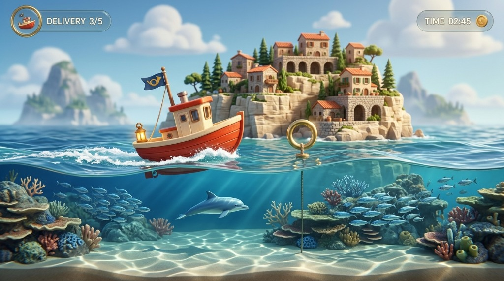

⚓ 해안 우편정 — 실제 플레이 & 3자 비교 랩
① 참고시안 (Option B)
② v6.2 실제 플레이
③ v7.2 사실적 3D 플레이
④ v6.2 vs v7.2 동시 화면
시안 겹침
0%
🎯 시안 구도 스냅
▶ 항해 출항
KO / EN

① 확정 참고시안 (Option B 원화 — 클릭 시 1.85x 확대)
② 직전 v6.2 (Godot 4.7.2 실시간 3D — 클릭/Space 길게 눌러 잠수 · 떼면 도약)
③ 보완 v7.2 사실적 3D (하이폴리 층리·볼류메트릭 적운·클링커 선체·수중 커스틱스)